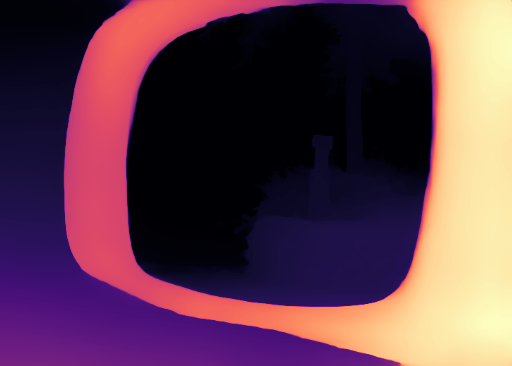
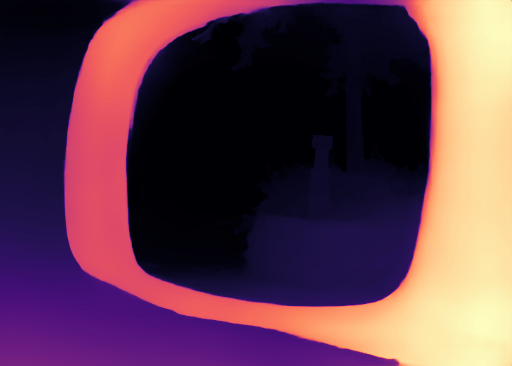
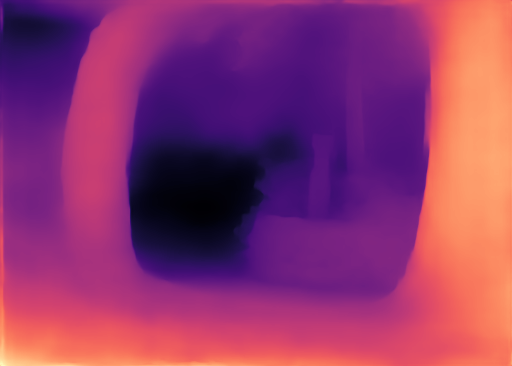

Guide 1 of 6 · 2 min
Which point is closer?
Try one photograph before looking at the models
Listen to this page
Read narration script
A mirror shows a nearby surface and a reflection of another scene, which makes depth harder to judge. A and B mark two points in this photo. Choose which looks closer before revealing the answers. The models disagree about their ordering. The maps below show the values behind each answer: a larger inverse-depth value means closer. The dataset label gives us an answer to check against, and the table shows what each model predicted at those same positions.
Download scriptLook at A and B in this photo. Which point is closer to the camera? Make a choice, then see how the models answered.

Which point would you place closer to the camera?
The dataset labels A as closer. DA3 chooses A and gets the comparison right. V2 and AC choose B. Compare the model maps.
Why start with a mirror?
Perspective, overlapping objects, and familiar sizes help us judge depth. A mirror complicates that judgment: we see a nearby surface and a reflection of another scene. A model has to make its prediction from the same photograph.
What the models predicted
Compare the three saved maps



Larger inverse-depth values mean closer. The label says A is closer. V2 and AC choose B; DA3 chooses A.
| Model | A: inverse depth | B: inverse depth | Chooses |
|---|---|---|---|
| Depth Anything V2 Small | 0.18752 | 0.29846 | B |
| DepthAnything-AC Small | 0.33438 | 0.35092 | B |
| Depth Anything 3 Small | 1.01188 | 0.84392 | A |
Each model has its own value and color range. A and B can be compared within a map.
Inspect this pair in the explorer →The dataset label gives all three models the same near/far question. DA3 matches it; V2 and AC reverse the ordering.
Before comparing the models, we need to distinguish near/far ordering from distances in meters.